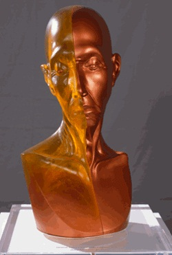

پذيرش > سایت نوشته ها > جودی شيکاگو، زنی که نام خود را برگزيد


 جودی شيکاگو، زنی که نام خود را برگزيد جودی شيکاگو، زنی که نام خود را برگزيد
13 خرداد 1391 - گفتگوی زارا مجيدپور با جودی شيکاگو، هنرمند و فمنيست معروف آمريکايی - نسخه قابل چاپ
"جودی شيكاگو" يكی از مشهورترين هنرمندان فمنيست قرن بيست و بيست و يکم است. او در سال 1939 در شيكاگو، ايالاتمتحده آمريکا، متولد شد. نام حقيقيش "جوديت سيلويا کوهن" است كه پس از ازدواج اولش به "جودی گرويچ" تغيير يافت.
در سال 1969 بر روی پلاكاردی در يک نمايشگاه هنری اعلام شده بود كه "از اين پس جودی گرويچ خودش را از تمامی نامهايی كه از طريق سلطه اجتماعی مردان بر او تحميل شده، میرهاند و خود نامش را انتخاب میكند، جودی شيكاگو" .
جودی نقاشی را از خردسالی آغاز نمود و بعدها در رشتههای نقاشی و مجسمه سازی مدارک ليسانس و فوق ليسانسش را دريافت نمود. برخی از کارهای مشهور او در طی دوران كاری طولانيش عبارتند از "ميهمانی شام"، "تفكيک: بخيهای در زمان"، "پروژه هولوكاست: از تاريكی به نور"، "پروژه تولد" و غيره. "ميهمانی شام" شاهكار جودی شيکاگوست.

بعنوان يک نويسنده شماری از كتابها را منتشر ساخته است، کتابهایی همچون "از درون گل: مبارزه من به عنوان يك زن هنرمند"، "چهره به چهره: فريدا كاهلو"، "زن و هنر: قلمرو جدال برانگيز"، "شهر بچه گربه ها" و غيره.
شما در زمينههای مختلفی فعال هستيد. خودتان را چگونه معرفی میكنيد؟ جودی شيكاگو كيست؟
جودی شيكاگو در درجه اول يك هنرمند است، اما او همچنين يک نويسنده و معلم نيز می باشد كه شديدا به قدرت هنر اعتقاد دارد.
آيا كسی هست كه بيش ازهمه در آثار شما اثر گذار و الهام بخش باشد؟
درطی پنج دهه از فعاليت های حرفهايم اشخاصی وجود داشتند که الهام بخش و اثر گذار بودند. اول از همه پدرم (كه وقتي سيزده سال داشتم از دنيا رفت)، كسی كه به من آموخت تنها به اين خاطر كه همگان به چيزی اعتقاد دارند، بدان معنا نيست كه برحق هستند. اين به من كمک كرد تا در مقابل انتقاد و انزوا مقاومت کنم. او به من کمک کرد تا به غريزه و احساس درونم اعتماد كنم. زمانی كه زن جوانی بودم و سعی داشتم تا پروژه "خانه زنان" را به اجرا درآورم، زن نويسنده به نام "آناييس نين" الهام بخش من شد تا بر روی پروژه ام متمرکز شده و آن را به اجرا درآورم. اين مساله در سراسر زندگيم به من کمک کرد و اين گونه بود که توانستم 12 كتاب را به چاپ برسانم. بعدها، زمانی كه درباره ی تاريخچه ام تحقيق می کردم و هنگامی که تلاش كردم تاريخ زنان –غربی- را در "ميهمانی شام آموزش دهم، تاريخ آن 1038 زنی كه در اثرم ارائه کردم الهام بخش من شد و در زندگی شخصیام به ميزان زيادی به من كمک نمود.
شما يک هنرمند فمنيست هستيد. تعريفتان از هنر فمنيستی چيست؟
من هنر فمنيستی را هنری می دانم كه نقش جنسيت را در زندگی ما به رسميت بشناسد. مردان هم میتوانند خالق هنر زنانه باشند.
چرا شاهكار شما "ميهمانی شام" چنان موفق و مشهور شد؟
درحقيقت اين مساله برای مورخان هنر هم يک سوال است که البته من پاسخ خودم را دارم. با وجود آن كه نظريه پردازان فمنيست بر اين مساله که جنسيت سازه ای متغير دارد پافشاری میكنند، اما برای اغلب زنان (و همچنين مردها) چنين نيست. زنان در اطراف جهان همچنان تحت فشار قرار گرفته و زندگیشان به واسطه جنسيتشان محدود شدهاست. "وجود ختنه زنانه يا "بريدن" كه زنها را از لذت جنسی محروم میسازد، گرفتن اجباری حق زنان نسبت به فضای عمومی، جلوه عمومی به واسطه پيچيدنآنها در لفافه، بهره برداری جنسی از آنها از طريق برده داری جنسيتی، در كنار تبعيضات جزئیتری كه باعث ميشود در قبال كارشان كمتراز مردان دستمزد گرفته و كمتر از حد به رسميت شناخته شوند و كمتر پاداش بگيرند). "ميهمانی شام" از زنها و آنچه كه انجام دادهاند، تقدير می كند و چنين امری آنچنان نادر اتفاق میافتد كه مخاطبان احساس میكنند در يک جشن زنانه که به تمدن غرب مربوط می شود غرق شدهاند. بعلاوه، ميهمانی شام قدرت بالقوه هنر را به ما يادآوری میكند و به مسائل مورد توجه مردم چنان می پردازد كه آنها قادر به درک آن باشند. (كاری كه حجم عمدهای از هنر معاصر آن را انجام نمیدهد).
"ميهمانی شام" تاريخ زنان در تمدن غرب است. بعنوان هنرمند فمنيست، آيا به تاريخ زنان خاورميانه ای علاقه داريد؟
قطعا.

شما صاحب پنج دهه سابقه در عرصه هنر هستيد. بعنوان هنرمندی سرشناس، چه توصيه ای برای پدرها و مادرهایی كه میخواهند فرزندانشان از کودکی با هنر آشنا شده و از آن تقديرنمایند، داريد؟
فرزندانتان را به موزهها ببريد و کارهای هنری را برروی ديوار – خانه اتان- آويزان كنيد، به ويژه آثار هنری كه هم توسط زنان و هم مردان هنرمند خلق شدهاند. بدين صورت كودكان می آموزند كه زن ها هم میتوانند هنرمند باشند.
دوست داريد مردم چگونه از جودی شيكاگو ياد كنند؟
به عنوان هنرمندی كه سعی داشت تا نقشی را در جهان ايفا كند و فرصتها را برای زنها افزايش دهد و با بالاترين اشكال بيانی علاوه بر ارائههای برابر و حقوق برابر در تمامی ابعاد زندگی و كاری، بر حقوق زنان پافشاری كند.
توضيح:
"ميز شام" يکی از ممتازترين نمونه های هنر فمنيستی جهان است. شکل اين ميز مثلث متساوی الضلاع نمادی است از زهدان زن که منبع زايش و آفرينش است. در اين ميز نام زنان برجسته ای که در طول تاريخ غرب اثر گذار بودند آورده شده است. در هر ضلع اين مثلث سيزده ميز قرار دارد. در يکی از ضلع ها نام الهه های دوران پيش از تاريخ و زنان صاحب نام تا دوران امپراطوری روم آورده شده است، زنانی چون "سافو" شاعر نامدار يونانی و "بوديکا" رهبر و فرمانده زن قبيله آی سينی.
در ضلع ديگر نام زنان نامدار از زمان پيدايش مذهب مسيحيت تا رنسانس را در بر می گيرد، زنانی چون "برجيت مقدس" و "تئودورا ملکه روم" و در ضلع آخر نام زنان سرشناس از زمان پيدايش کشور آمريکا تا انقلاب زنان را شامل می گردد، زنانی چون "ورجينيا ولف" و "اميلی اليزابت ديکنسون". در سال 1976جودی شيکاگو به همراه گروهی از زنان هنرمند کار بر روی "ميزشام" را آغاز نمود و سرانجام اين کار در سال 1999 به پايان رسيد.
شهرزاد نیوز
ارسال به
بالاترین
،
توییتر
،
فریندفید
،
فیسبوک
در همين بخش :
 یک خبر تلخ؟ یک قانونشکنی؟ یک تصمیم بخشنامهای جدید؟ یک خبر تلخ؟ یک قانونشکنی؟ یک تصمیم بخشنامهای جدید؟
چرا بایست به سکسوالیته پرداخت؟ / نفیسه آزاد
آزارجنسی خانگی؛ «قربانی» نه، «نجات یافته»
زنان، بزرگترین بازندگان بهار عرب
سانسور از دیدگاه جنسیتی/الهه امانی
ديگر بخش ها :
طرح یک میلیون امضا
|
مقالات
|
سایت نوشته ها
|
اخبار
|
گزارش كمپين
|
گفت و گو
|
علیه سکوت
|
كوچه به كوچه
|
نامه های شما
|
گزارش ویژه
|
گفتگو با اعضا
|
ویژه سالگرد کمپین
|
تصویر برابری
|
دل آرام علی
|
تریبون
|
مقالات
|
تاریخ شفاهی
|
خارج از چارچوب
|
کتابخانه
|
درباره کمپین
|
کمپین در شهرها
|
کمپین در بند
|
صدای تغییر
|
ویژه 22 خرداد
|
لایحه حمایت از خانواده
|
گالری
|
عشا مومنی
|
امیر یعقوبعلی
|
خدیجه مقدم
|
راحله عسگری زاده و نسیم خسروی
|
پروین اردلان،جلوه جواهری، مریم حسین خواه، ناهید کشاورز
|
زینب پیغمبرزاده
|
سعیده امین، سارا ایمانیان، محبوبه حسین زاده، ناهید کشاورز و همایون نامی
|
احترام شادفر
|
نسیم سرابندی زاده،فاطمه دهدشتی
|
وبلاگ مهمان
|
پرونده خرم آباد
|
دستگیری ها
|
مریم مالک
|
پرستو اللهیاری
|
مهرنوش اعتمادی
|
سمیه رشیدی
|
Other Languages
|
همراهان
|
«فراخوان کمپین ده روز با بهاره هدایت»
| English
|